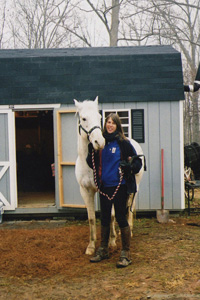

Mise (pronounced “Misha”, meaning “me” Irish) was the only mare I used during TATA. She proved to be excellent throughout the trip although not without the occasional female moodiness and wanting things her way. I preferred riding her and so did she, never appearing to be completely comfortable carrying the pack. Somehow it was as if she felt it was beneath her.
Mise often behaved like a watchdog and would notice and hear things long before I did. I would know immediately that there was something around when she would break in to a lively energetic gait with ears erect. Even if she had an ache somewhere, that would be temporarily forgotten when she had noticed movement or figures in the distance.
She was very attached to Tusa even though she had no qualms pushing him out of the way sometimes to get to the food first or giving him little bites. One of these proved to be not so little when in Salta Argentina she imposed such a vicious bite on Tusa’s back that it delayed our travelling with at least two weeks.
Whoever meets Mise, falls in love with her. She just has this special demeanour about her, not overly needy and dependent on people, yet always trying to please and behave in a proper way.
Her nomadic existence continued in Ireland and in a way, I think she actually likes to experience different kinds of places to live. In some way it must remind her of the newness of each day when we travelled through the Americas. At the moment she’s with friends in Ashford, sharing a field with two donkeys, Charlie and Chester. Mise also has an open stable for when she needs shelter. It’s a tranquil spot and she seems very happy.
Mise has given me so much joy since we met all those years ago in Cordoba Argentina. Her presence makes me feel alive and I am always very conscious of the special bond between us. Together we’ve had many exhilirating but also some tough experiences. She is one special lady and I only want the best for her.
I’ve been considering the idea of Mise having a foal. She’s a maiden mare though and no ‘spring chicken’ and I would want to be sure that it would be possible for her, without putting her life at risk. Soon she will be assessed by a Vet, specialising in the reproduction of horses and we’ll take it from there. It’s important to me that the father is also a Criollo and artificial insemination seems the most likely route – either from Brittany in France where there is a Criollo farm or from Argentina.
 A tribute to Tusa: 10 March 2003
A tribute to Tusa: 10 March 2003
Dearest Tusa,
Never in my wildest dreams could I imagine that ten months into our journey, a time would come that Mise and I would have to say goodbye to you.
And even now, while I am writing this, it feels so incredibly strange to think that we will have to do without your company from here on. I keep on telling myself that you have gone on to an even greater adventure and although I know that you will be in spirit with us, for every single mile that we continue to cross through foreign lands, it just doesn't feel right that you won't be there.
This space is too small and time too short to share all my memories of you dear old Tus but they are with Mise and I, never to be forgotten...
I remember in particular your special relationship with Mise and despite the little bites (some of them causing quite a bit of damage) she would give you, you never retaliated, always continuing to be her faithful and loyal companion. When we spent six days on the river boat recently, coming through the Amazon, I saw numerous times how she would push your head away to get some of your food. She must have thought yours tasted better because she had a bucket of her own or maybe it was just her way to show that she likes to be close to you! I would be amazed at your generosity of spirit, letting her get away with it, pretending that nothing had happened.
I will never forget the first time the pack went lopsided on you. We were in the middle of the mountains, going uphill and the next moment you came charging past us, kicking and bucking as if your life depended on it. I got such a fright and I am sure you were terrified too. You ended up with a few gashes on your legs and I with torn saddle-bags and all our belongings strewn over the road and when it happened a second time a few days later, great was my surprise when you stood completely still, waiting for me to rescue you.
How you made me laugh that day when we were traveling through Beni and our destination kept on staying out of reach. We struggled through fatigue, heat, hunger, sweat and horse flies and I was in tears more than once. I found a bottle with drinking water that was seriously warm at this stage and after I had taken a few sips, I poured the rest over you and Mise's heads. The next moment you pulled the most hilarious face I had ever seen, curling up your lips and exposing your huge teeth in an open grin. I looked at your funny face and laughed out loud through the tears!
The difficult times we had, me giving out to you when you kept on pulling on the leading rope, you sometimes simply turning back with a "I've had enough" attitude, the new year introductory kick you gave me when we tried to get you onto the boat to cross into Brazil..... all these are so insignificant when I think about how much you had contributed to our TATA and added spice to all our daily adventures.
Mise misses you badly and her big eyes are full of sorrow. She was so attached to you and I know these are difficult times for her too. Our new companion will never replace you Tusa. But we need him so that Mise and I can fulfill our dream. I know you will understand. There will never be another one like you old Pal. Ever.
Wish us luck. You stay in our hearts forever.
With much affection and the fondest of memories, Miss M and Mise
Tu Fein: September 1996 - January 2004
Tu Fein joined the TATA trio in Manaus Brazil when Tusa sadly had moved on to a more peaceful place. I was told that Tu Fein was part Criollo but I think that was only said because they knew I was looking for one! He was quarter horse maybe with some other mixture but that was it. He would not have been considered the most handsome of horses but to me he was lovely. His facial expression always made him seem to be on the verge of breaking in to tears!
Tu Fein must have had a difficult upbringing because with our first encounter I noticed his nervousness and over-sensitive demeanour. In fact, this was the reason I decided to take him, hoping that with love and care he will get less jumpy and paranoid and more trusting. So suspicious was he that initially, he would not even take a carrot or other food from my hand. He would view the piece of food with great concern, rolling his eyes with the white parts showing, before grabbing the grub like a dog. But it was not long before this behaviour changed and I felt great pride when it became obvious that he had more faith in me, appearing calm in my presence.
He got on well with Mise and accepted her as the leader. I think he secretly fancied her and always seemed particularly envious when other horses showed her their appreciation. Tu Fein was loyal, hard working and always ready to serve. He did not demand anything in return, only continued love and affection, which I gave him in abundance. He never received the admiration from people in the way that Mise did so I always made sure that he received extra attention.
Going through the Guatemalan/Mexican mountains over very rugged terrain and through rivers was not easy but Tu Fein proved that he was up for anything and just took it all in his stride, showing tremendous stability and stamina.
I was devastated when he was diagnosed with Piroplasmosis once we were back in Guatemala again. I made contact with numerous veterinarians in different parts of the world and received the same advise: if he has both forms of the disease (which he did), treatment would be nearly impossible and could in fact cause his death and much suffering. Nobody in Guatemala was going to keep Tu Fein in isolation for the rest of his life and that would have been no fair life for him anyway. Taking him with me was impossible because he could not get the necessary papers because of his disease.
A heartbreaking decision was made to put Tu Fein down. I had no other option.
He was a true star.
May be rest in peace.
Camanchi
Looking like a grumpy old man, Camanchi turned out to be the perfect companion for our travels; funny, consistent and easy, he never gave me a day’s trouble. He was as good a riding horse as he was a packhorse and truly, there was nothing that could faze him.
He accepted Toto, who could be a bit weird, without fuss and never did I notice him behaving in an intimidating or aggressive way towards him or any other horse. Camanchi grew attached to me quite quickly and his obedience and easy-going nature appealed to me no end. He had excellent endurance, the sweetest disposition and whatever negative things some people want to say about Appaloosa’s, Camanchi certainly did not fit the stereotype.
I would have loved to buy him from his owners if I could, had I some land in Ireland where I could keep him. Camanchi was returned to Georgia, a week before TATA came to an end. I was so sad to see him go and regretted that he could not be there for our last day’s ride through Central Park in New York City.
I saw him again in October of 2007 when I was in Camilla Georgia, doing a book signing. Todd, his owner had the great idea of bringing him in to town and even though he looked more mature with more spots than I remembered, it was still the ‘old Camanchi’ from three years ago.
Toto
Time spent with Toto, the first Tennessee walking horse I have ever ridden, certainly proved to be an interesting experience.
He was not perfect by any means and had a real stubborn and bossy streak. In fact, you’d call him hard headed quite easily despite his big dewy eyes, which could easily mislead to make you think he was a pushover. From the start he wanted to be boss and did not like to be in second place. Ever.
There was also a softness in him however and he was the type that liked cuddles and to be close all the time. Some people interpreted this as a lack of respect for my ‘personal space’ as they would call it but I understood Toto and to me he was just a softie that craved physical affection.
He was not the easiest on the road and often would behave in erratic ways, pulling Camanchi when he was on the leading rope in all directions. His jumpy behaviour caused my Argentine saddle to be ripped in two with all our belongings scattered over snow-covered ground and another time, it resulted in Camanchi getting a gash above his right eye. Still though, I enjoyed Toto’s spirit and I felt very protective of him.
He got to spend some time with Mise when they were together in New Jersey and also on our last day’s ride through Central Park. Noises were made by the mounted patrol until about wanting to buy Toto and even though I had no doubt that he would be very well looked after, I envisaged a life of open spaces and fields to roam for him. I also wanted his owner to be female. Toto was a sensitive soul and I believed he needed a soft and understanding touch. I knew he would not cope in a pressurised city environment.
Toto is now living in Virginia with a couple that simply adores him, despite some of his shortcomings. I saw him again towards the end of 2007 and could not have asked for a better place for him.